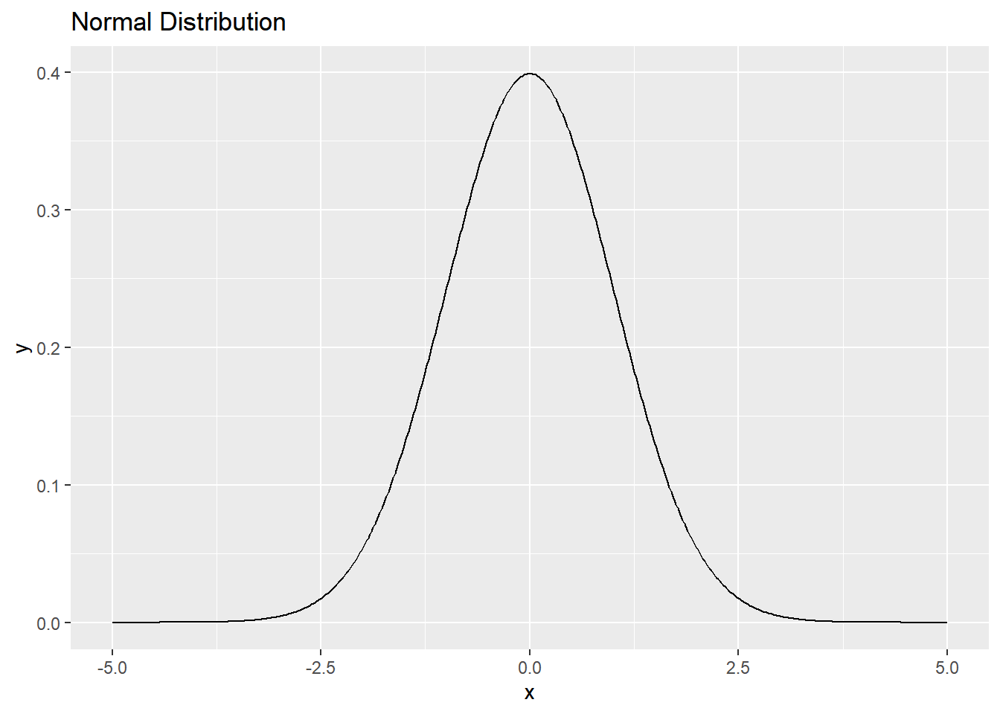
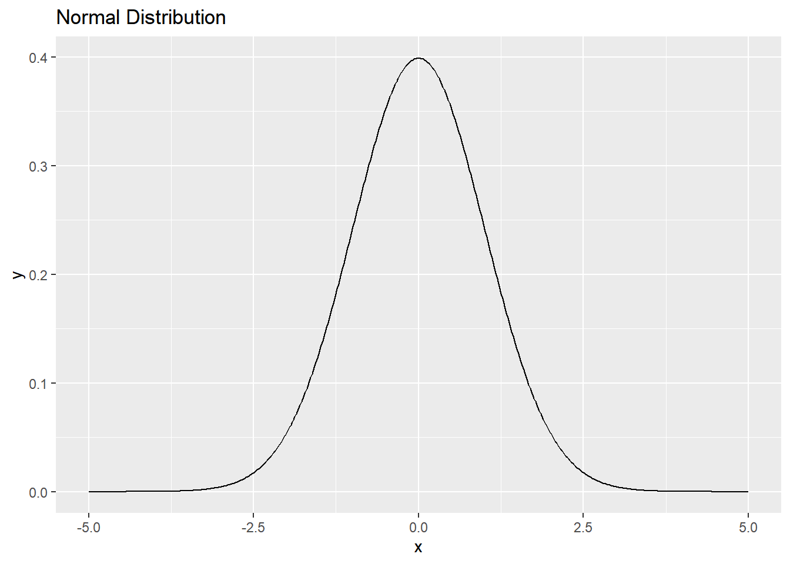
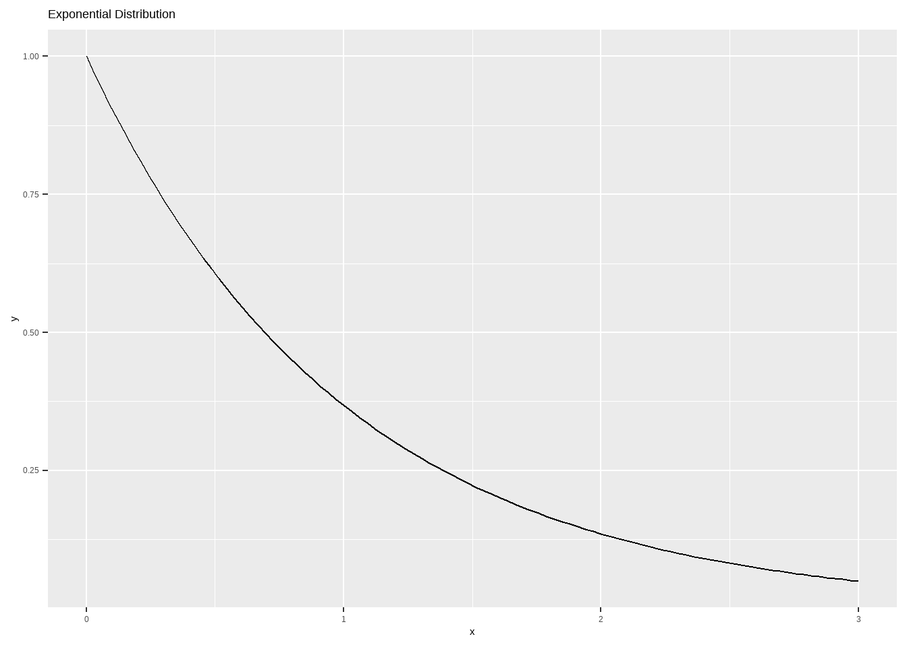
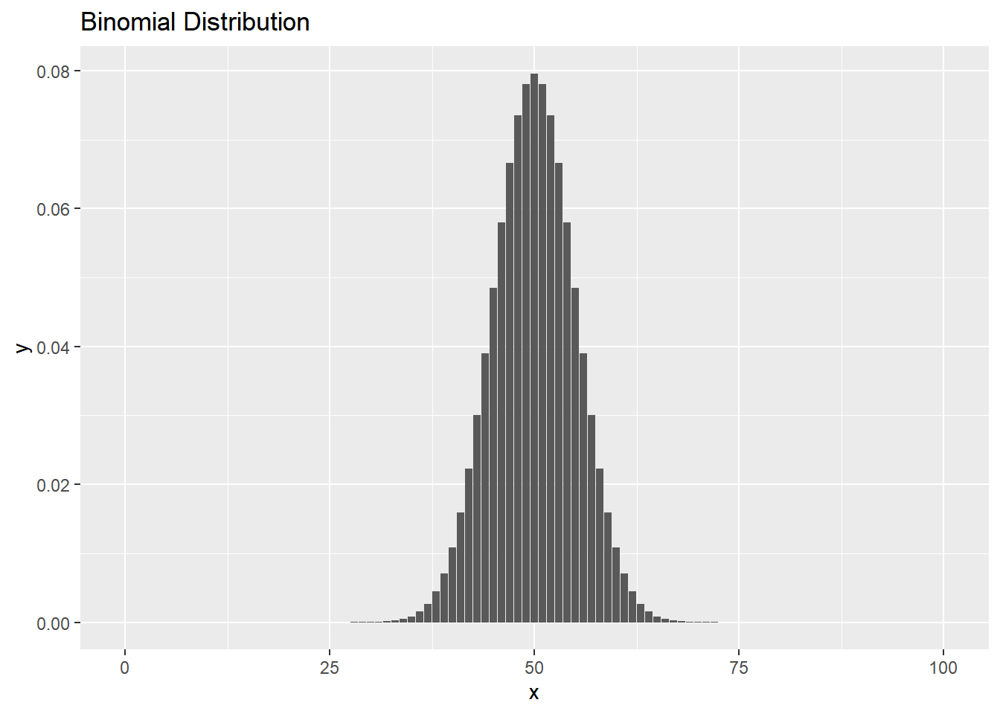
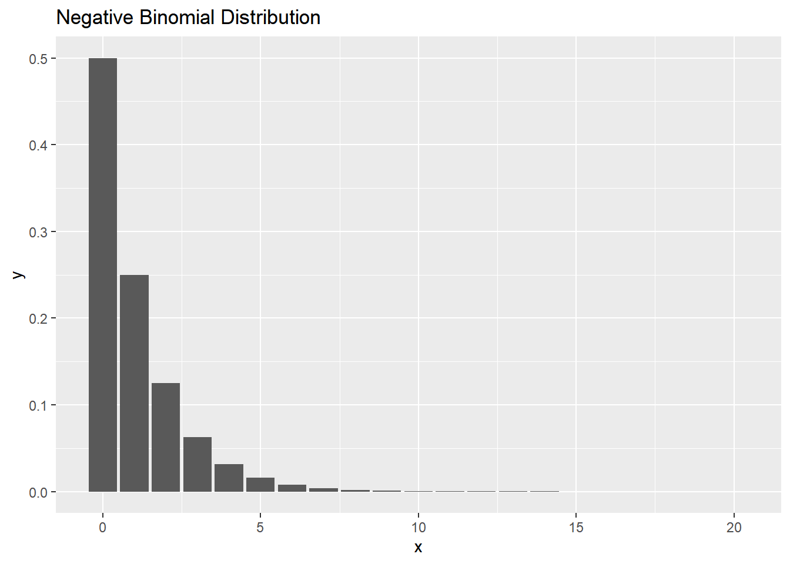
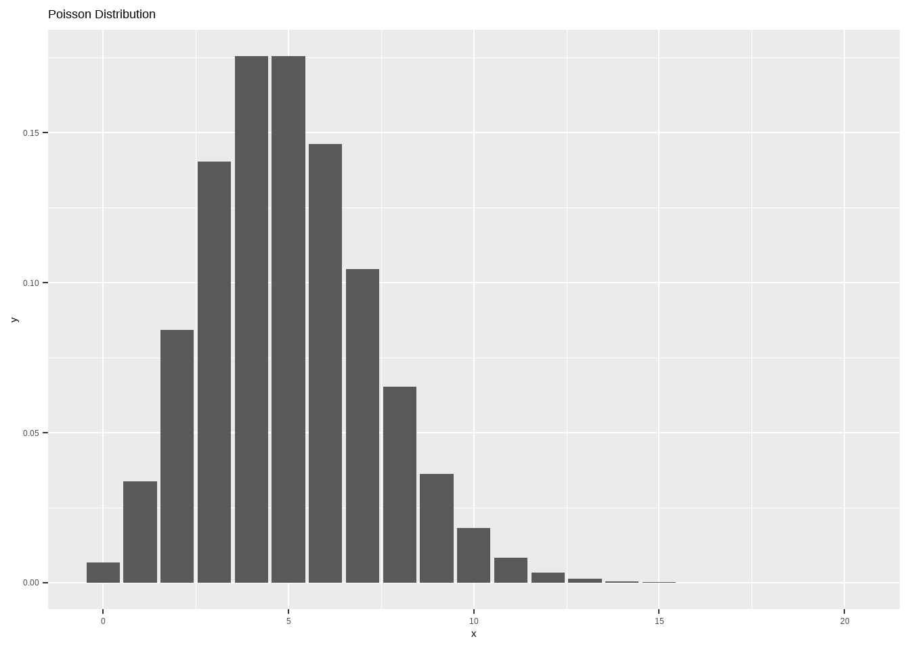
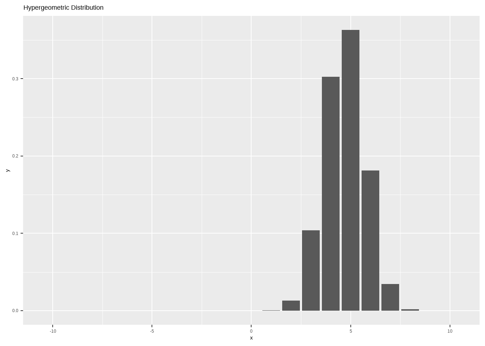

Show the code

同质 (Homogeneity)：指数据样本的同质性，即样本中各个个体之间的相似性或一致性。
变异 (Variation)：指数据样本中各个个体之间的差异性或变化程度。
总体 (Population)：研究对象的全部个体的集合。描述总体特征的统计学指标称为参数 (Parameter)。
样本 (Sample)：从总体中抽取的一部分个体。由样本计算出的特征指标称为统计量 (Statistic)。
变量 (Variable)：随机变量的简称，是研究对象的属性或特征，可以在不同个体之间或同一个体在不同时间上取不同值。
数据 (Data)：变量的观测值
\[ f(x)= \frac{1}{\sqrt{2πσ^2}} e^{\frac {−(x−μ) ^2 }{2σ^2 }} \]
其中，\(\mu\)是均值， \(\sigma\)是标准差

对数正态分布：非参数检验
指数分布：广义线性模型，对数秩（log-rank ）检验
\[ f(x)=λe^{−λx}，x\ge 0 \]
其中，默认(rate)：\(\lambda = 1\)。

伯努利分布
Bernoulli 试验
\[ P(x)=\binom{n}{x}p^x(1-p)^{n-x} \]

DESeq2 差异分析\[ P(x)=\frac{\Gamma(x+n)}{\Gamma(n)\ x!}p^n(1-p)^x \]
其中，均值 \(\mu = \frac{n(1-p)}{p}\)，方差 \(\frac{(1-p)}{p^2}\)。

DNA 点突变
\[ P(x)=\frac{\lambda^x e^{-\lambda}}{x!}，E(X)=Var(X)=λ \]

\[ P(x)=\frac{\binom {m}{x}\binom{n}{k-x}}{\binom{m+n}{k}}；x=0，...，k；p=m/(m+n) ；N=m+n \]
其中，\(p = \frac{m}{m+n}\)，\(N = m+n\)，均值 \(E[X] = \mu = kp\)，方差 \(Var(X) = kp(1-p) \frac{(m+n-1)}{(m+n-k)}\)。

DNA [ A, G, C, T ]

假设我们有四个可能性相等的框。使用公式，在第一个框中观察到 4，在第二个框中观察到 2，而在其他两个框中没有观察到的概率是多少？